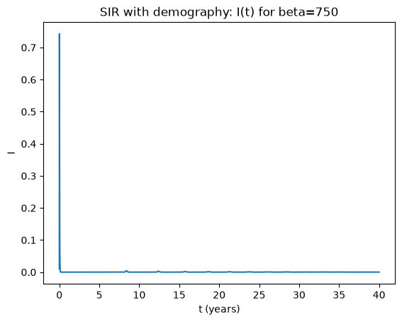
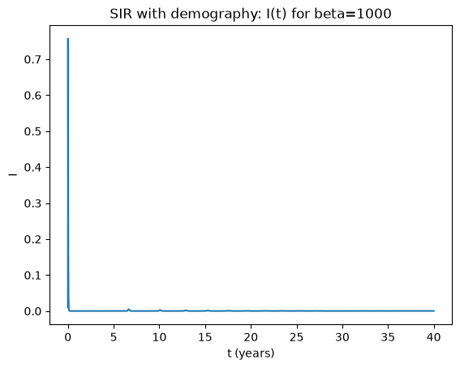
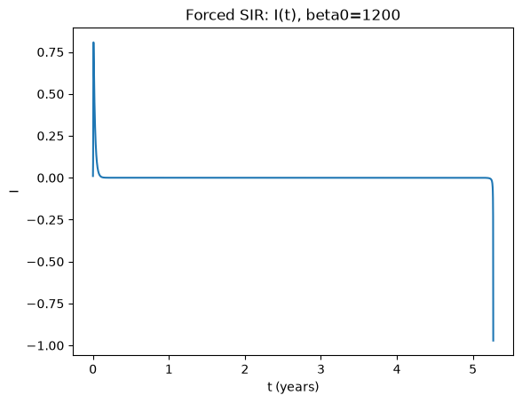
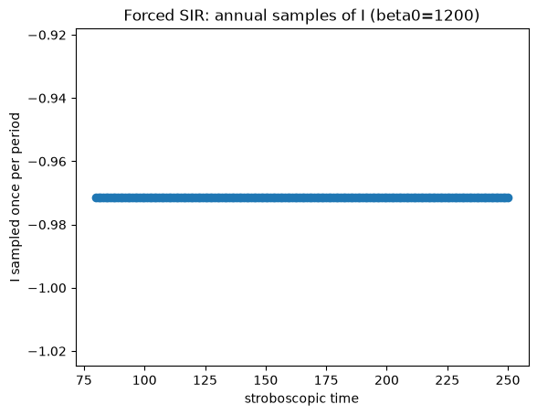
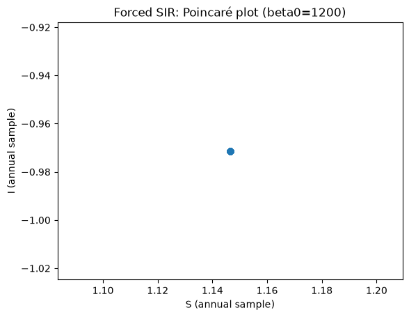
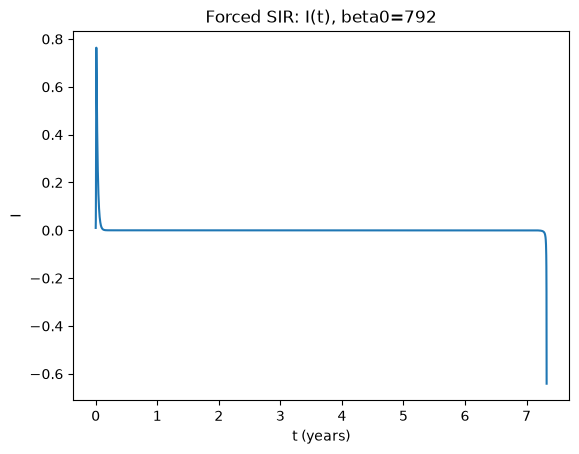
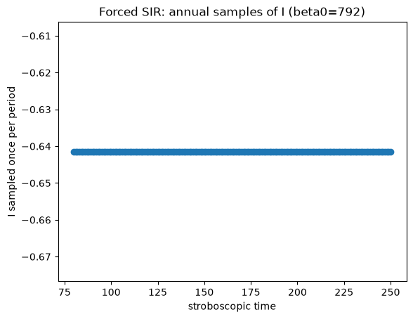
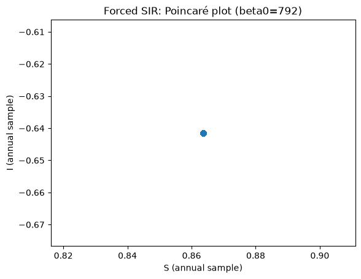

Epidemiological dynamics: Practicals#
This section contains practicals based on the Epidemiological dynamics chapter.
Note
What’s in here
(3‑3) \(R_0\) estimation + vaccination thresholds + core SIR intuition
(3‑3d) SIR with demography (endemic equilibrium + transients)
(4‑1) Periodically forced SIR model + stroboscopic diagnostics
import numpy as np
import matplotlib.pyplot as plt
from scipy.integrate import solve_ivp
Note
Model conventions used here
\(S(t)\), \(I(t)\), \(R(t)\) denote susceptible, infectious, recovered/removed (fractions or counts).
In the demography + forcing exercises, time is in years (so rates like \(\gamma\) and \(\mu\) are per-year).
Problem 3‑3a — Approximate \(R_0\) for measles#
(3-3) The calculation of the basic reproductive number
For measles, the duration of the infectious period is about a week. Infected children tend to make 2–3 infectious contacts per day. Can you approximate the basic reproductive number?
Related chapter section:
Basic SIR model (no demography) (subsection: Early growth and \(R_0\))
# Back-of-the-envelope estimate
contacts_per_day_low, contacts_per_day_high = 2, 3
infectious_days = 7
R0_low = contacts_per_day_low * infectious_days
R0_high = contacts_per_day_high * infectious_days
R0_mid = 2.5 * infectious_days
R0_low, R0_mid, R0_high
(14, 17.5, 21)
Solution:
If one infectious individual makes ~2–3 effective infectious contacts/day for ~7 days, then
\(R_0 \approx 14\)–\(21\) (midpoint ~17.5). This is consistent with measles being very highly transmissible.
Problem 3‑3b — Vaccination fraction to prevent epidemics#
(3-3) The calculation of the basic reproductive number
Based on your calculation, what fraction of the population needs to be vaccinated in order to prevent epidemics?
Related chapter section:
Vaccination and herd immunity
def herd_immunity_threshold(R0):
return 1 - 1/R0
for R0 in [R0_low, R0_mid, R0_high]:
print(R0, herd_immunity_threshold(R0))
14 0.9285714285714286
17.5 0.9428571428571428
21 0.9523809523809523
Solution:
For \(R_0\) in the range 14–21, the herd immunity threshold is roughly 93%–95%.
(Using the midpoint \(R_0\approx 17.5\) gives \(p_c\approx 94.3\%\).)
Problem 3‑3c (starred) — Vaccinating only at age 5#
(3-3) The calculation of the basic reproductive number
Next one perhaps a little too hard. You need to estimate the fraction of the population under 5.
Children normally will have had their first measles vaccination by their second birthday and a booster before their 5th birthday. In the first months of their lives, they will carry protection from infection through maternal antibodies.
What would be the effect of dropping the first vaccination and relying entirely on the second? What fraction of children would you need to immunise at age 5 to prevent a measles epidemic?
Related chapter sections:
Vaccination and herd immunity
SIR with demography (births and deaths)
Solution sketch (order-of-magnitude)#
Let \(p_{<5}\) be the fraction of the population younger than 5 years.
If vaccination happens only at age 5, then (ignoring maternal antibodies after a few months) roughly \(p_{<5}\) remain unvaccinated at any time, creating a persistent susceptible pool.
A crude bound is: even if you vaccinate 100% of 5‑year‑olds perfectly, the overall susceptible fraction is at least \(p_{<5}\).
To prevent sustained transmission you need \(S \lesssim 1/R_0\).
So a necessary condition is:
For measles, \(1/R_0\) is about 0.05–0.07. In many high‑income settings, \(p_{<5}\) is of similar magnitude (~5–7%), meaning you are already at/above the threshold. Any less‑than‑perfect coverage or vaccine efficacy makes it impossible.
Thus: vaccinating only at age 5 would require essentially complete (≈100%) uptake and very high efficacy, and even then it is marginal in many populations — which is why early vaccination is critical for high‑\(R_0\) infections like measles.
Problem 3‑3d — Dynamics of the SIR model with demography#
(3-3) Investigate the dynamics of the SIR model
Use parameters \(\beta=750\), \(\gamma=52\), \(\mu=0.0125\). Choose initial conditions such that \(S(0)+I(0)+R(0)=1\).
Next, set parameters to \(\beta=1000\), \(\gamma=52\), \(\mu=0.0125\). Is there a qualitative change in behaviour? Is there any cyclic behaviour? Is the equilibrium stable?
Related chapter section:
SIR with demography (births and deaths)
def sir_demo_rhs(t, y, beta, gamma, mu):
S,I,R = y
return [mu - beta*S*I - mu*S,
beta*S*I - gamma*I - mu*I,
gamma*I - mu*R]
def simulate(beta, gamma=52, mu=0.0125, y0=(0.99,0.01,0.0), t_end=40, n=8000):
t_eval = np.linspace(0, t_end, n) # years
sol = solve_ivp(lambda t,y: sir_demo_rhs(t,y,beta,gamma,mu),
(0,t_end), list(y0), t_eval=t_eval, rtol=1e-9, atol=1e-12)
return sol.t, sol.y
for beta in [750, 1000]:
t,(S,I,R) = simulate(beta=beta)
plt.figure()
plt.plot(t,I)
plt.xlabel("t (years)"); plt.ylabel("I")
plt.title(f"SIR with demography: I(t) for beta={beta}")
plt.show()


Solution notes (3‑3d)#
Both parameter sets have \(R_0=\beta/(\gamma+\mu) \gg 1\), so the infection persists and approaches an endemic equilibrium.
Typically the approach shows damped oscillations (transient cycles) that decay toward equilibrium.
Increasing \(\beta\) increases \(R_0\) and shifts the endemic levels (higher transmission → higher endemic burden), but does not usually create sustained cycles without forcing.
Problem 4‑1 — Periodically forced SIR#
(4-1) Investigate the periodically forced SIR model
The transmission rate now varies periodically (e.g. seasonal forcing), so that
with
Use parameters \(b=1200\), \(\mathrm{amp}=0.08\), \(\gamma=50\), \(\omega=6.28319\), \(\mu=0.0125\). The frequency parameter in the sine function is chosen such (the value is \(2\pi\)) that the period is one year. Investigate the dynamics using time plots and phase plane plots. Keep running the model for several (10+ years). What do you see? What is the period of the oscillation?
Now use parameters \(b=792\), \(\mathrm{amp}=0.08\), \(\gamma=50\), \(\omega=6.28319\), \(\mu=0.0125\). What do you see? What is the period of the oscillation?
In Earn et al. [2000] cycles of different length are shown. Can we find these? To make the period‑3 cycle visible, set the parameters to \(b=380\), \(\mathrm{amp}=0.08\), \(\gamma=50\), \(\omega=6.28319\), \(\mu=0.0125\). See whether you get a period‑3 cycle. If not, fiddle with your initial conditions (I was lucky with \(S=0.13\), \(I=10^{-6}\)). Look at the phase plane. How can you tell it is a 3‑cycle from the phase portrait?
For further analysis of cycles in forced epidemic models, see Krylova and Earn [2013].
Related chapter section:
Periodically forced SIR (seasonality)
def sir_forced_rhs(t, y, beta0, amp, omega, gamma, mu):
S,I,R = y
beta = beta0*(1 + amp*np.sin(omega*t))
return [mu - beta*S*I - mu*S,
beta*S*I - gamma*I - mu*I,
gamma*I - mu*R]
def simulate_forced(beta0, amp=0.08, omega=6.28319, gamma=50, mu=0.0125,
y0=(0.99,0.01,0.0), t_end=200, step=0.002):
t_eval = np.arange(0, t_end+step, step) # years
sol = solve_ivp(lambda t,y: sir_forced_rhs(t,y,beta0,amp,omega,gamma,mu),
(0,t_end), list(y0), t_eval=t_eval, rtol=1e-8, atol=1e-10)
return sol.t, sol.y
def stroboscopic_samples(t, X, omega=6.28319, start_year=50, end_year=200):
# sample once per forcing period
T = 2*np.pi/omega
years = np.arange(start_year, end_year, T)
I = X[1]
S = X[0]
I_s = np.interp(years, t, I)
S_s = np.interp(years, t, S)
return years, S_s, I_s
for beta0 in [1200, 792]:
t,X = simulate_forced(beta0=beta0, t_end=250)
S,I,R = X
plt.figure()
plt.plot(t, I)
plt.xlabel("t (years)"); plt.ylabel("I")
plt.title(f"Forced SIR: I(t), beta0={beta0}")
plt.show()
years, S_s, I_s = stroboscopic_samples(t, X, start_year=80, end_year=250)
plt.figure()
plt.plot(years, I_s, marker="o", linestyle="none")
plt.xlabel("stroboscopic time"); plt.ylabel("I sampled once per period")
plt.title(f"Forced SIR: annual samples of I (beta0={beta0})")
plt.show()
# Stroboscopic phase portrait (S,I)
plt.figure()
plt.plot(S_s, I_s, marker="o", linestyle="none")
plt.xlabel("S (annual sample)"); plt.ylabel("I (annual sample)")
plt.title(f"Forced SIR: Poincaré plot (beta0={beta0})")
plt.show()






How to read the forced-model diagnostics#
If the annual (stroboscopic) samples converge to one point, you have a 1‑cycle (period‑1 with the forcing).
If they alternate between two points, you have a 2‑cycle.
If they repeat among three points, you have a 3‑cycle, etc.
The Poincaré plot in (S,I) makes this visually obvious.
You can also estimate the period directly from peaks in \(I(t)\); however, the stroboscopic approach is robust for identifying multi‑year cycles.